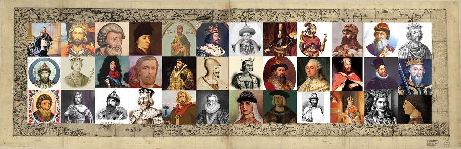

Загрузить файл
АвтоИскать
Искать!
Поворот:
Сбросить положение картинки

Как пользоваться:
Загружаешь картинку.
Выбираешь интересующую область.
Нажимаешь "Искать" на экране или Enter на клавиатуре.
Или можно нажать галочку АвтоИскать, тогда после выделение области сразу откроется её поиск.